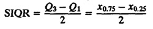
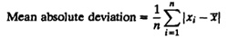
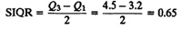
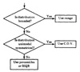

| Previous | Table of Contents | Next |
In practice, the main problem with variance is that it is expressed in units that are the square of the units of the observations. For example, the variance of response time could be 4 seconds squared or 4,000,000 milliseconds squared. Changing the unit of measurement has a squared effect on the numerical magnitude of the variance. For this reason, it is preferable to use the standard deviation. It is in the same unit as the mean, which allows us to compare it with the mean. Thus, if the mean response time is 2 seconds and the standard deviation is 2 seconds, there is considerable variability. On the other hand, a standard deviation of 0.2 second for the same mean would be considered small. In fact, the ratio of standard deviation to the mean, or the coefficient of variation (C.O.V.), is even better because it takes the scale of measurement (unit of measurement) out of variability consideration. A C.O.V. of 5 is large, and a C.O.V. of 0.2 (or 20%) is small no matter what the unit is.
Percentiles are also a popular means of specifying dispersion. Specifying the 5-percentile and the 95-percentile of a variable has the same impact as specifying its minimum and maximum. However, it can be done for any variable, even for variables without bounds. When expressed as a fraction between 0 and 1 (instead of a percentage), the percentiles are also called quantiles. Thus 0.9-quantile is the same as 90-percentile. Another term used is fractile, which is synonymous with quantile. The percentiles at multiples of 10% are called deciles. Thus, the first decile is 10-percentile, the second decile is 20-percentile, and so on. Quartiles divide the data into four parts at 25, 50, and 75%. Thus, 25% of the observations are less than or equal to the first quartile Q1, 50% of the observations are less than or equal to the second quartile Q2, and 75% are less than or equal to the third quartile Q3. Notice that the second quartile Q2 is also the median. The α-quantiles can be estimated by sorting the observations and taking the [(n-1)α + 1]th element in the ordered set. Here, [.] is used to denote rounding to the nearest integer. For quantities exactly halfway between two integers, use the lower integer.
The range between Q3 and Q1 is called the interquartile range of the data. One half of this range is called Semi-Interquartile Range (SIQR), that is,

Another measure of dispersion is the mean absolute deviation, which is calculated as follows:

The key advantage of the mean absolute deviation over the standard deviation is that no multiplication or square root is required.
Among the preceding indices of dispersion, the range is affected considerably by outliers. The sample variance is also affected by outliers, but the effect is less than that on the range. The mean absolute deviation is next in resistance to outliers. The semi-interquantile range is very resistant to outliers. It is preferred to the standard deviation for the same reasons that the median is preferred to the mean. Thus, if the distribution is highly skewed, outliers are highly likely and the SIQR is more representative of the spread in the data than the standard deviation. In general, the SIQR is used as an index of dispersion whenever the median is used as an index of central tendency.
Finally, it should be mentioned that all of the preceding indices of dispersion apply only for quantitative data. For qualitative (categorical) data, the dispersion can be specified by giving the number of most frequent categories that comprise the given percentile, for instance, the top 90%.
The following example illustrates the computation of percentiles and SIQRs.
Thus,

In order to select the correct index among the four suggested in Section 12.8, the first question that should be asked is whether the variable is bounded. If so, then dispersion is best expressed by specifying the range. If there are no natural bounds, then check to see if the distribution is unimodal symmetric. If it is, then it makes sense to measure the average distance from the mean, that is, the variance, standard deviation, or coefficient of variation. If the distribution is nonsymmetric, percentiles are the best indices. These guidelines are summarized in Figure 12.4.

FIGURE 12.4 Selecting the correct index of dispersion.
The decision rules given in Figure 12.4 are not hard and fast. In many cases, the quantity required for proper design and analysis is determined by other considerations. For example, a network designed for average traffic is grossly underdesigned. The network load is highly skewed. Networks are therefore designed to carry 95- to 99-percentile of the observed load levels. Thus, the dispersion of the load should be specified via range or percentiles. Power supplies are similarly designed to sustain peak demand rather than average demand.
One problem in using percentiles is that finding a percentile requires several passes through the data, and therefore, the observations have to be stored. On-the-fly display of percentiles as new observations are produced consumes considerable amount of computing and storage resources. Jain and Chlamtac (1985) have proposed a heuristic algorithm called p2 that allows dynamic calculation of percentiles as the observations are generated. The observations are not stored; therefore, the algorithm has a very small and fixed storage requirement regardless of the number of observations. The algorithm has also been extended to allow histogram plotting.
Formulas for various indices of central tendencies and dispersion are summarized in Box 12.1.
| Previous | Table of Contents | Next |
){kind=link}
){kind=link}